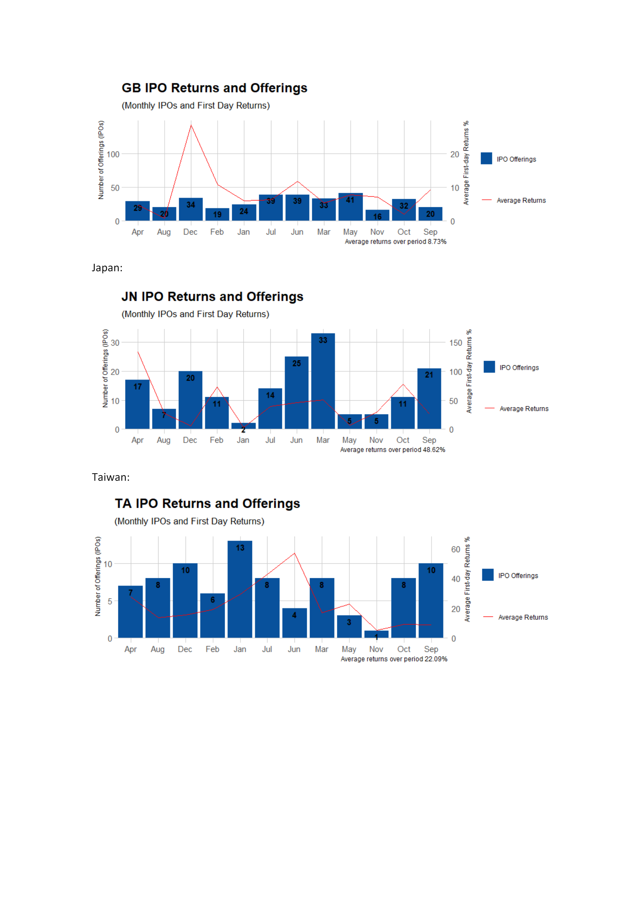

I wrote a script a while back when I was working on a project which required the analysis of IPO data, of course I used the IPO data from the bloomberg terminal but I wanted a free source also. Yahoo Finance collects IPO data for a number of worldwide markets, its not clean data but it goes as far back as the year 2000.
I wanted to follow on from some research by J.R.Ritter here. The goal is to try and compute the money left on the table from IPO’s and extend the research up until 2018.
Quote: In the 1980s, the average first-day return on initial public offerings (IPOs) was 7%. The average first-day return doubled to almost 15% during 1990-1998, before jumping to 65% during the internet bubble years of 1999-2000 and then reverting to 12% during 2001-2003.
The code is not clean and if I had to re-write it today I would do so very differently but it works. I just re-download a small sample of the data as it takes some time to process all years but changing from to the year 2000 should get you all the data.
library(rvest)
library(naniar)
library(tidyverse)
library(tidyquant)
library(lubridate)
library(knitr)
library(kableExtra)
from = "2019-09-01"
to = "2019-09-19"
s <- seq(as.Date(from), as.Date(to), "days")
url <- "https://finance.yahoo.com/calendar/ipo?from="
links <- gsub(" ", "", paste(url,from,"&to=",to,"&day=",format(s, "%Y-%m-%d")))
store <- NULL
tbl <- NULL
for(i in links){
store[[i]] = read_html(i)
tbl[[i]] = html_table(store[[i]])
}
list <- unlist(tbl, recursive = FALSE)
df <- do.call("rbind", list)
df <- df %>%
replace_with_na_all(condition = ~.x == "-")
data <- df[!is.na(df$Price), ]I get a nice data frame which looks like:
data %>%
head() %>%
kable() %>%
kable_styling(bootstrap_options = c("striped", "hover", "condensed", "responsive"))| Symbol | Company | Exchange | Date | Price Range | Price | Currency | Shares | Actions |
|---|---|---|---|---|---|---|---|---|
| VG8.AX | VGI Partners Asian Invests Ltd | ASX | Aug 04, 2019 | N/A | N/A | AUD | N/A | Amended |
| VG8.AX | VGI Partners Asian Invests Ltd | ASX | Aug 04, 2019 | N/A | N/A | AUD | N/A | Amended |
| VG8.AX | VGI Partners Asian Invests Ltd | ASX | Aug 04, 2019 | N/A | N/A | AUD | N/A | Amended |
| China Merchants Coml Reit | HKSE | Sep 02, 2019 | N/A | N/A | USD | N/A | Amended | |
| Immunotech Biopharm Ltd | HKSE | Sep 02, 2019 | N/A | N/A | USD | N/A | Amended | |
| Nusantara Almazia PT | Jakarta | Aug 12, 2019 | N/A | N/A | IDR | 461530000 | Amended |
Theres lot of missing IPO price data and many duplicate results since this is just a calendar and thus reports on any news about an IPO.
I next get the stock price information: - which can take some time so I suggest saving the results.
symbols <- df$Symbol
symbols <- symbols[symbols != ""]
stocks <- symbols %>%
tq_get("stock.prices",
from = from,
to = to)
stocks %>%
head() %>%
kable() %>%
kable_styling(bootstrap_options = c("striped", "hover", "condensed", "responsive"))| symbol | date | open | high | low | close | volume | adjusted |
|---|---|---|---|---|---|---|---|
| SDC | 2019-09-12 | 20.59 | 21.10 | 16.28 | 16.67 | 55416800 | 16.67 |
| SDC | 2019-09-13 | 16.81 | 18.71 | 16.81 | 18.68 | 19119100 | 18.68 |
| SDC | 2019-09-16 | 18.46 | 19.00 | 17.81 | 18.90 | 5573000 | 18.90 |
| SDC | 2019-09-17 | 19.00 | 19.30 | 18.65 | 19.07 | 4415200 | 19.07 |
| SDC | 2019-09-18 | 19.17 | 19.70 | 18.90 | 19.48 | 10533900 | 19.48 |
| TXG | 2019-09-12 | 54.00 | 58.00 | 51.00 | 52.75 | 7326300 | 52.75 |
Next I join the daily stock price data with the IPO data, clean it up a little and compute the returns. I also split the data into different markets such as NYSE, LSE, Frankfurt etc. and compute the average daily returns. You can find everything along with the excel file collecting IPOs since 2000 here.
Heres how the final data looks with the calculated one day price returns:
read.csv("https://raw.githubusercontent.com/msmith01/IPO_Web_Scraping_Yahoo/master/yahoo_finance_IPOs_2000_2018.csv", nrows = 10) %>%
kable() %>%
kable_styling(bootstrap_options = c("striped", "hover", "condensed", "responsive"))| X | symbol | company | exchange | date.x | price | currency | actions | date.y | open | close | adjusted | returns | year |
|---|---|---|---|---|---|---|---|---|---|---|---|---|---|
| 1 | EVD.F | CTS Eventim AG | Frankfurt | 2000-01-31 | 21.50 | EUR | Priced | 2000-02-01 | 6.37500 | 6.30000 | 4.990930 | -0.7069767 | 2000 |
| 2 | SLAB | Silicon Laboratories Inc | NasdaqGM | 2000-03-24 | 31.00 | USD | Priced | 2000-03-24 | 63.00000 | 69.37500 | 69.375000 | 1.2379032 | 2000 |
| 3 | 0764.HK | Ocean Shores Group Ltd | HKSE | 2000-02-10 | 1.33 | HKD | Priced | 2005-09-29 | 9984.20996 | 9984.20996 | 9946.558594 | 7505.9247827 | 2000 |
| 4 | MTB.V | Mountain Boy Minerals Ltd | TSXV | 2000-07-12 | 0.35 | CAD | Priced | 2000-07-12 | 0.35000 | 0.35000 | 0.350000 | 0.0000000 | 2000 |
| 5 | IAG.TO | Industrial-Alliance Life | Toronto | 2000-02-10 | 15.75 | CAD | Priced | 2000-02-10 | 8.50000 | 8.70000 | 5.096976 | -0.4476190 | 2000 |
| 6 | 2457.TW | Phihong Enterprises Co Ltd | Taiwan | 2000-02-15 | 111.00 | TWD | Priced | 2000-02-16 | 55.19920 | 55.19920 | 28.781498 | -0.5027099 | 2000 |
| 7 | IFX.F | Infineon Technologies AG | Frankfurt | 2000-03-14 | 35.00 | EUR | Priced | 2000-03-14 | 71.50000 | 79.00000 | 69.923615 | 1.2571429 | 2000 |
| 8 | BRC.V | BRC Development Corp | TSXV | 2000-02-24 | 0.50 | CAD | Priced | 2000-07-20 | 0.35000 | 0.40000 | 0.400000 | -0.2000000 | 2000 |
| 9 | PTR | PetroChina Co Ltd | NYSE | 2000-04-07 | 16.44 | USD | Priced | 2000-04-06 | 16.43750 | 16.43750 | 7.569896 | -0.0001521 | 2000 |
| 10 | 0643.HK | Carry Wealth Holdings Ltd | HKSE | 2000-03-09 | 1.00 | HKD | Priced | 2000-03-14 | 0.78389 | 0.70833 | 0.332258 | -0.2916700 | 2000 |
I try to recreate some of the plots on J.R.Ritters website for each of the countries.
knitr::include_graphics("Monthly_bloomberg_graphs.png")
knitr::include_graphics("Monthly_bloomberg_graphs2.png")
knitr::include_graphics("Monthly_bloomberg_graphs3.png")
The returns seem reasonable given some exchanges are growth exchanges and others are mature exchanges. I would take caution here however since Yahoo is somewhat unreliable (at least in my experience of getting stock prices and fundamental data).
References See J.R.Ritter for other IPO data. See Tim Loughran and Jay Ritter IPO returns: